Ours-道路点云旋转6 秒慢速视角变化，用于展示完整道路重建的三维连续性。
4D RECONSTRUCTION · DOMAIN ADAPTATION
VGGT-Ω 4D重建与领域适配
将 VGGT-Ω 接入自动驾驶离线建图链路，并针对真实道路数据完成大规模重建评测、异常场景诊断与领域微调，使通用三维重建能力进一步适配实际建图数据。
26,383VGGT / Omega 同口径重建评测 Case
↓32.8%–48.1%主要几何误差均值下降
4.97M领域微调训练帧
真实 VGGT RGB 点云拖动旋转 · 滚轮缩放
定性展示
重建质量
VGGT / Ours同步定性对照统一相机运动下观察两种重建后端的几何完整性与局部形态差异。
项目摘要
从通用三维重建到自动驾驶领域适配
这一部分工作不是重新设计 VGGT-Ω 网络，而是围绕真实自动驾驶建图需求完成模型接入、统一评测和领域适配。首先将 VGGT-Ω 作为新的重建后端接入现有 Pipeline；随后在 26,383 个 Case 上与原有 VGGT 基线进行同口径评测，并通过 Bad Case 分析定位模型与 Pose 输入问题；最后利用约 497 万帧自动驾驶数据进行领域 Fine-tuning，进一步提升深度和局部几何质量。
01多视图输入相机图像 / 位姿 / 动态掩码
02VGGT-Omega 重建深度 / 点云 / 相机位姿
03领域微调与评测4.97M 帧 / 统一指标 / 定性回归
VGGT-Omega 后端接入
在统一接口下完成权重加载、分块推理以及深度/位姿输出，保持与 VGGT-v2 可直接比较。
同一评测口径26,383 Case 重建比较
在同一批 Case 上比较主要 delta 与 lateral 指标，并配合定性案例观察完整性、缺块和重影。
主要误差下降 32.8%–48.1%4W 级数据微调
冻结 ViT，微调 Aggregator 与 DPT，在百万帧领域数据上进一步提升深度与局部几何精度。
AUC@3 0.8459 → 0.9173VGGT-v2 与 VGGT-Omega：大样本量化 + 定性案例
VGGT-v2 与 VGGT-Omega：大样本量化 + 定性案例
两种后端使用相同 Case、相同输入与相同下游地图处理流程进行评测。VGGT-Ω 在主要 delta 和 lateral 指标上均取得明显改善，同时能够为更多 HD Map 顶点提供有效三维更新。
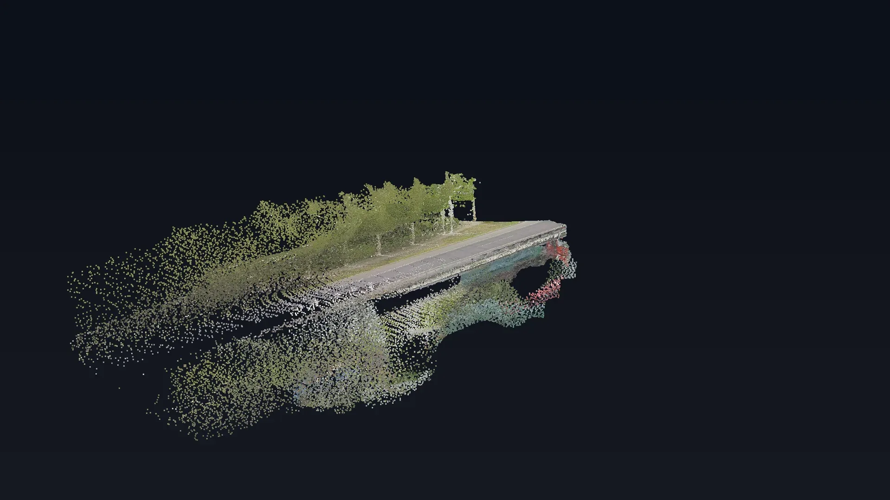
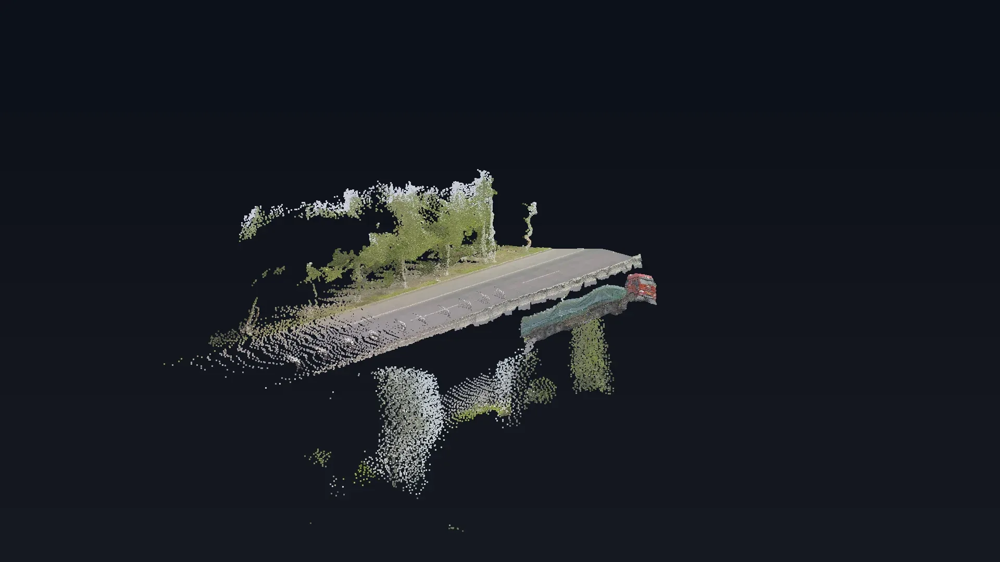
VGGT-v2VGGT-Omega统一虚拟相机下的定性对照
拖动查看两种后端在同规格重建结果中的形态差异。左右拖动
拖动查看两种后端在同规格重建结果中的形态差异。左右拖动
指标VGGT-v2Omega变化
max_delta mean0.9697 m0.5546 m↓42.8%
mean_delta mean0.2965 m0.1539 m↓48.1%
max_lateral mean0.4701 m0.3158 m↓32.8%
更新顶点数173,396299,087+73%
updated ratio3.62%6.15%覆盖更广
完整重建指标表
| 指标 | VGGT-v2 | VGGT-Omega | 结论 |
|---|---|---|---|
| max_delta mean | 0.9697 m | 0.5546 m | ↓42.8% |
| max_delta median | 0.8910 m | 0.5040 m | ↓43.4% |
| mean_delta mean | 0.2965 m | 0.1539 m | ↓48.1% |
| mean_delta median | 0.2770 m | 0.1460 m | ↓47.3% |
| max_lateral mean | 0.4701 m | 0.3158 m | ↓32.8% |
| max_lateral median | 0.4320 m | 0.2920 m | ↓32.4% |
| 更新顶点数 | 173,396 | 299,087 | Omega 更新更多 |
极端失败场景专项恢复
在 VGGT 中筛选 max_delta > 10 m 且 max_lateral > 3 m 的长尾失败子集，Omega 将主误差量级显著压低。
max_delta mean41.77 m → 3.28 m
max_lateral mean17.73 m → 0.88 m
Recall@50cm0.9816 → 0.9976
代表性定性案例
案例 A · VGGT 长尾失败完整性与贴合度
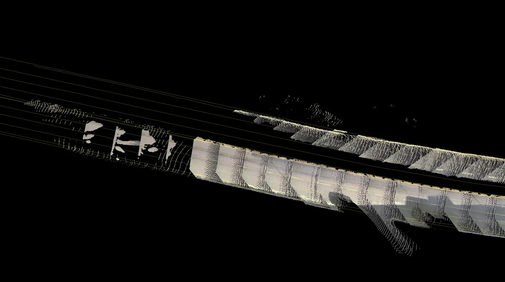
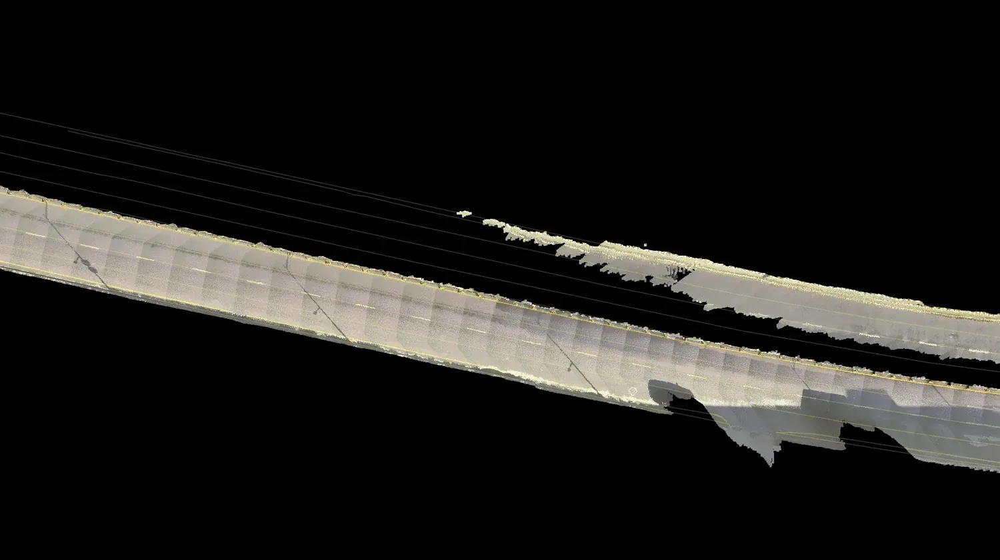
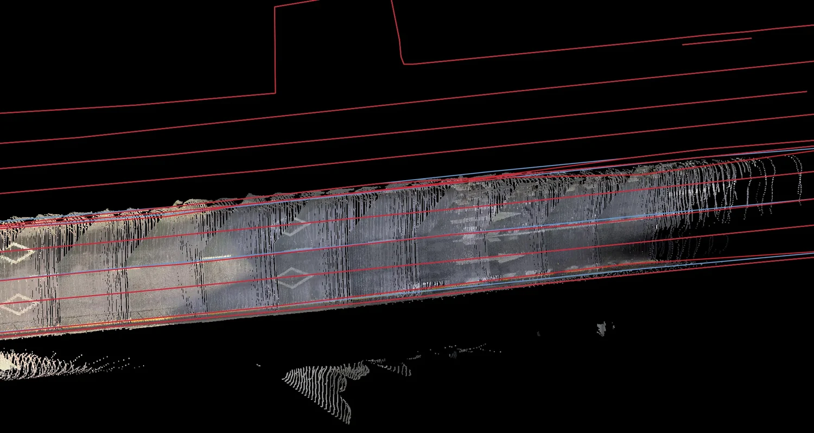
Omega 在道路结构连续性与地图矢量贴合上更稳定。
案例 B · 复杂局部结构缺块 / 重影
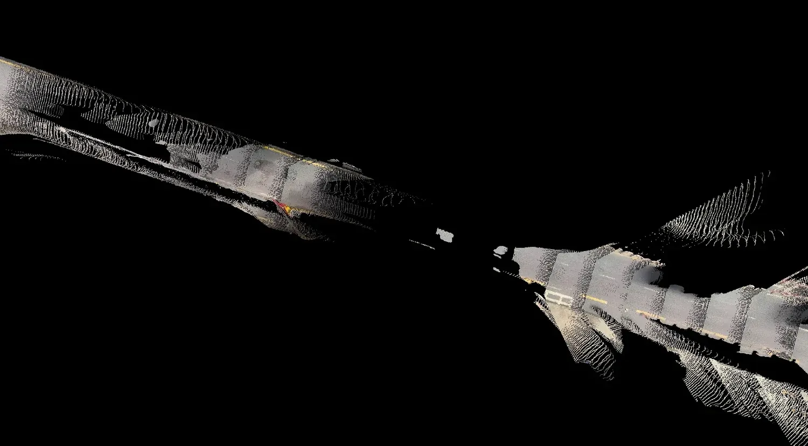
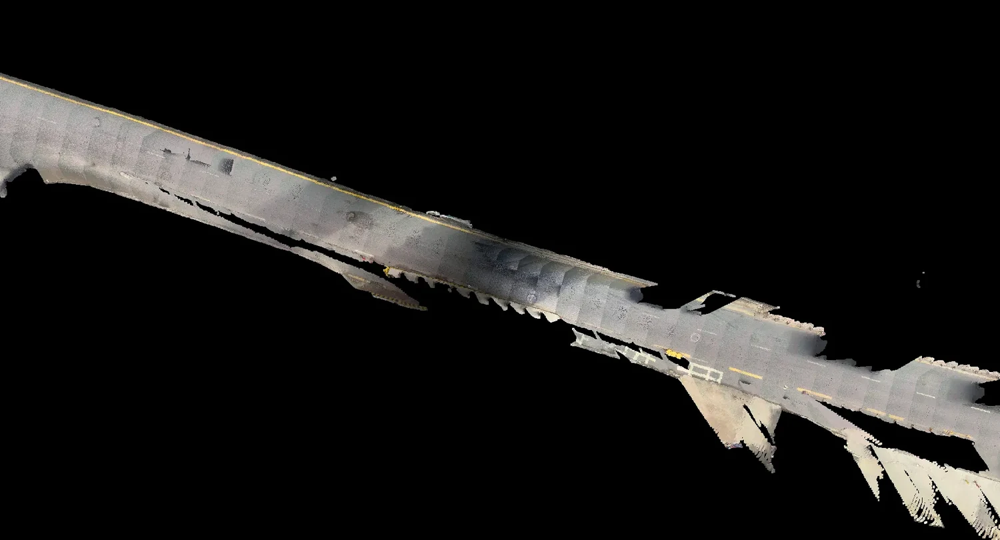
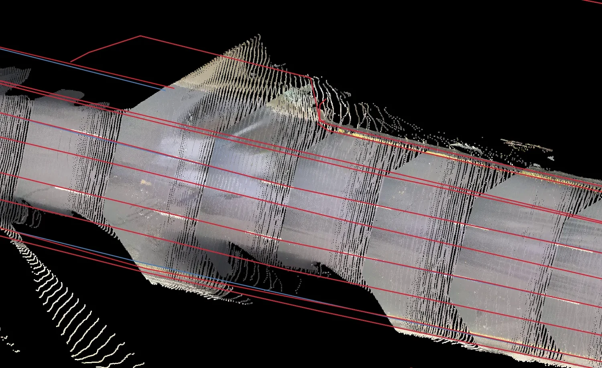
对复杂道路局部，Omega 的可用点云范围更完整。
案例 C · 正常道路场景常规样本
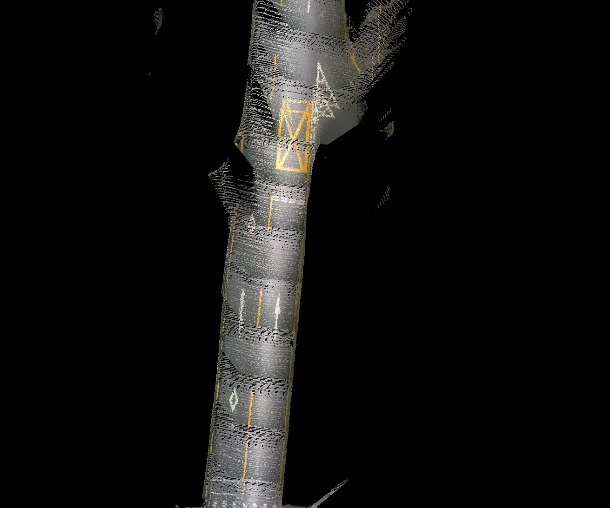
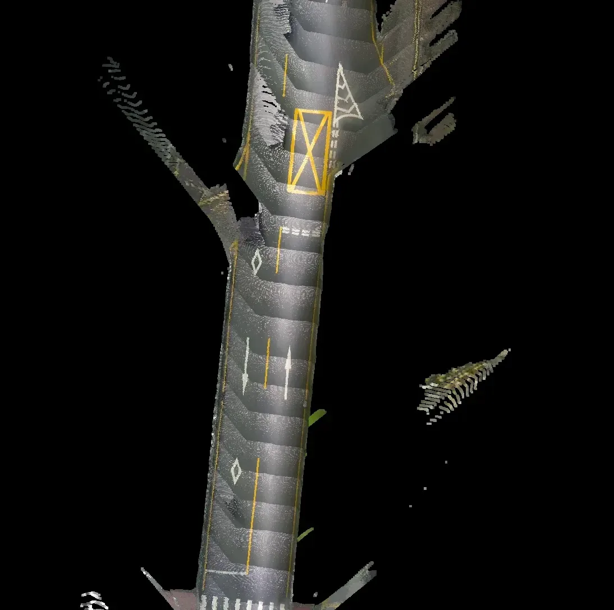
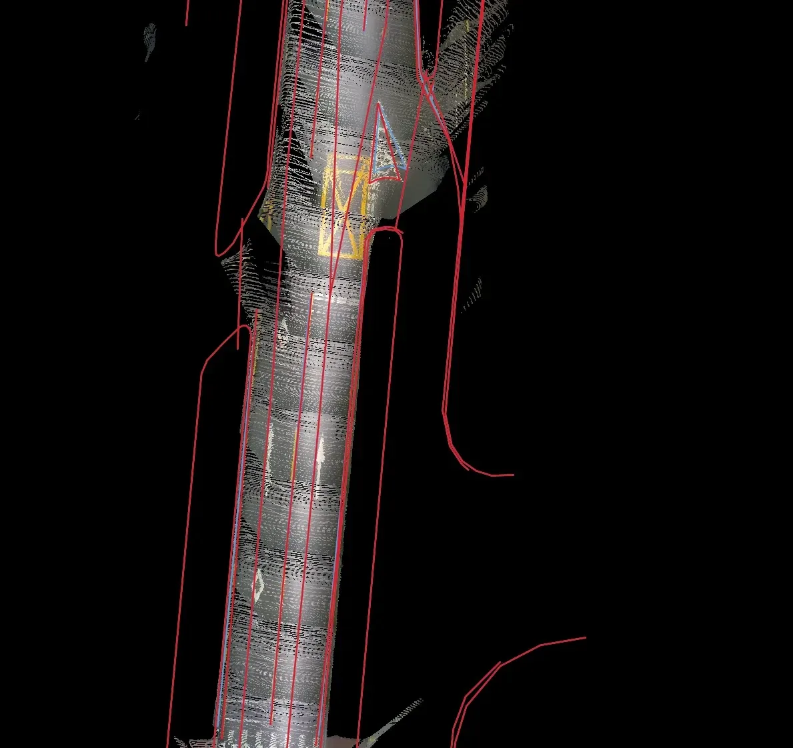
正常样本中重点观察道路边界、纹理连续性和矢量局部偏差。
案例 D · 长条道路结构远距离结构
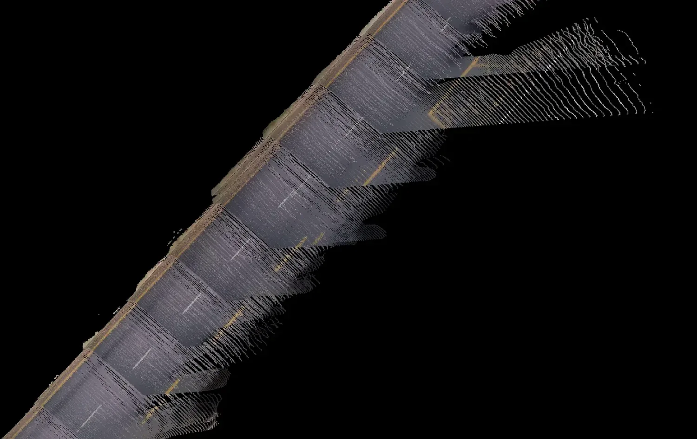
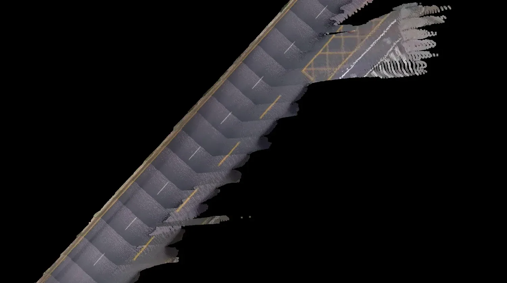
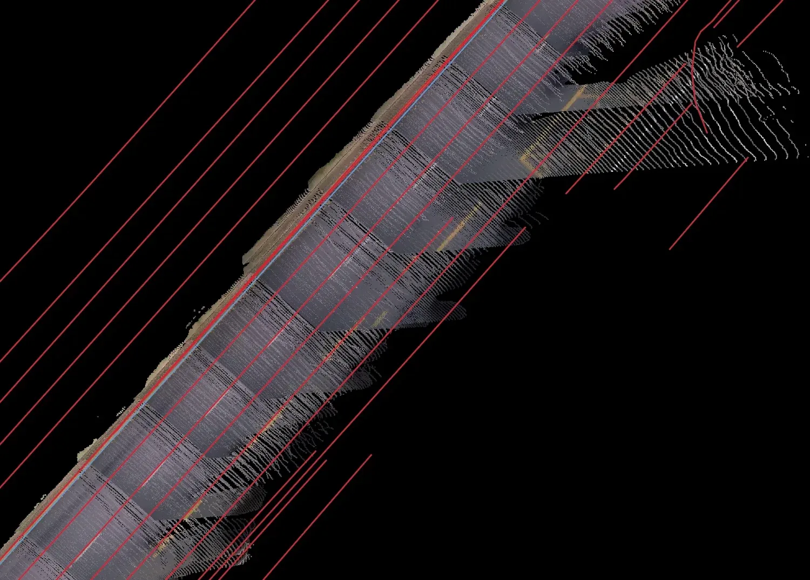
用于检查长距离路面重建中的连续性和局部几何噪声。
领域微调
自动驾驶领域适配
VGGT-Ω 的通用权重已经具备较强的三维几何能力，但真实自动驾驶数据在相机配置、道路结构、深度分布和动态目标比例上存在明显领域差异。因此进一步利用大规模道路数据进行监督微调，使模型输出贴近实际离线建图求。
训练设置
38,280 / 2,020训练 / 验证 Case
4,966,001 / 263,381训练 / 验证帧
冻结 ViT微调 Aggregator + DPT
约 77k训练 iterations
定性图来自项目 PDF 中保存的 5K / 4W 对照，不把其作为独立 checkpoint provenance 证据；正式结论以同口径量化表为准。
| 模型 | AUC@3 (SA) | AUC@30 (SA) | AbsRel ↓ | Delta@1.25 ↑ |
|---|---|---|---|---|
| 官方权重 | 0.8459 (0.8628) | 0.9812 (0.9819) | 0.2818 | 0.5892 |
| 5K 微调 | 0.8825 (0.9012) | 0.9848 (0.9858) | 0.07771 | 0.9333 |
| 4W 微调 | 0.9173 (0.9298) | 0.9876 (0.9880) | 0.06966 | 0.9403 |
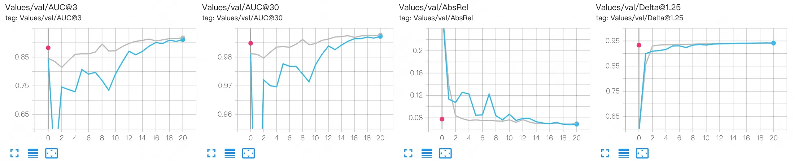
验证曲线：AUC@3 / AUC@30 持续提升，AbsRel 下降，Delta@1.25 快速收敛后保持稳定。
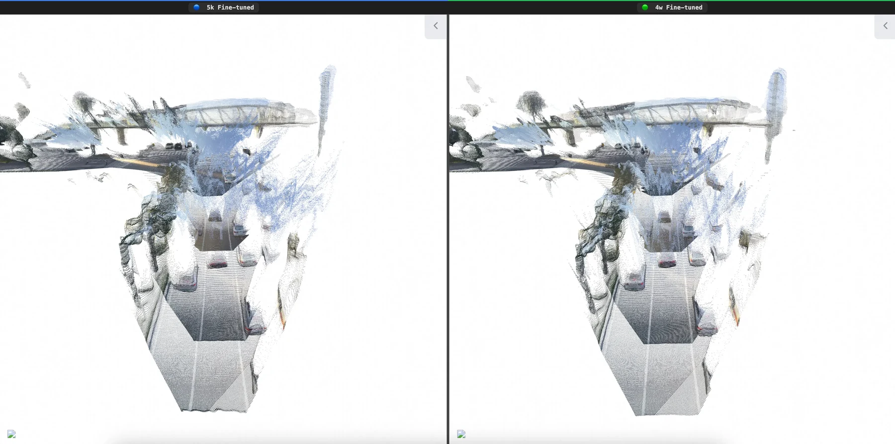
定性案例 A：文档中保留的 5K 与 4W 点云结果，同一画面直接左右对照。
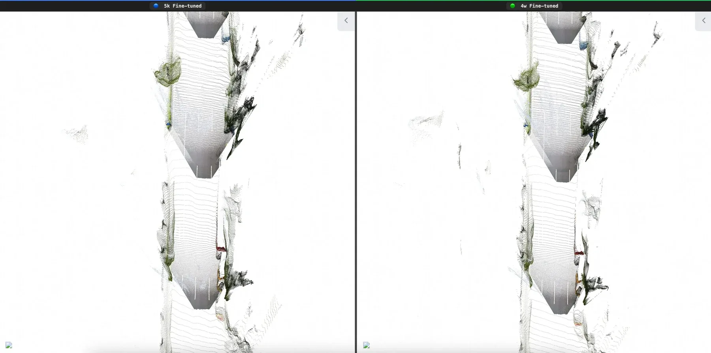
定性案例 B：长直道路区域用于观察局部几何连续性与远处结构。
项目结论
把通用三维重建模型变成可用于真实自动驾驶建图的重建后端
VGGT-Ω 提供了更强的基础三维几何能力，而这部分工作的重点，是将这种能力真正接入自动驾驶建图链路：通过 26,383 Case 统一评测确认模型收益，通过 Bad Case 与 Pose 诊断识别实际失败来源，再利用约 497 万帧领域数据进行 Fine-tuning。最终关注的不是单一 benchmark 分数，而是道路几何是否更准确、严重失败是否减少，以及更多重建结果能否进入后续 4D HDMap 更新流程。